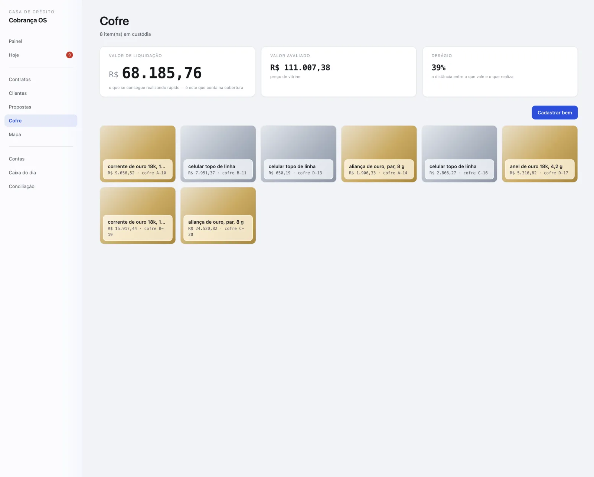
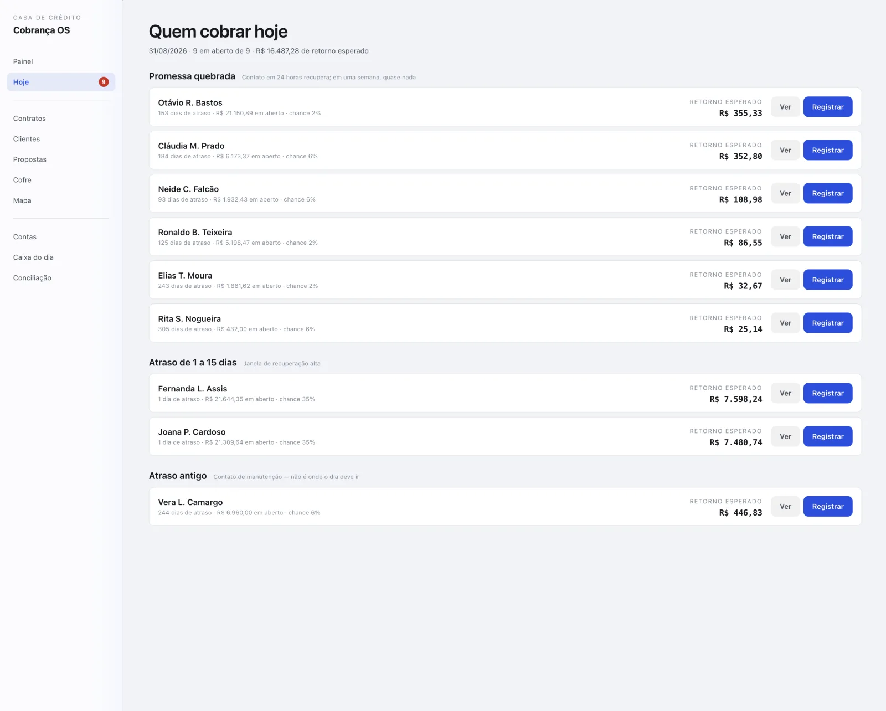
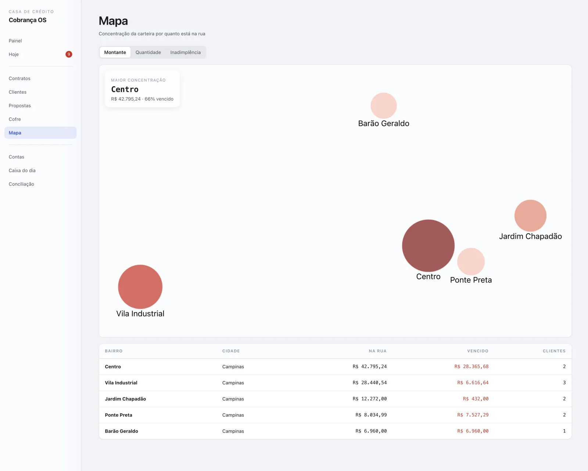
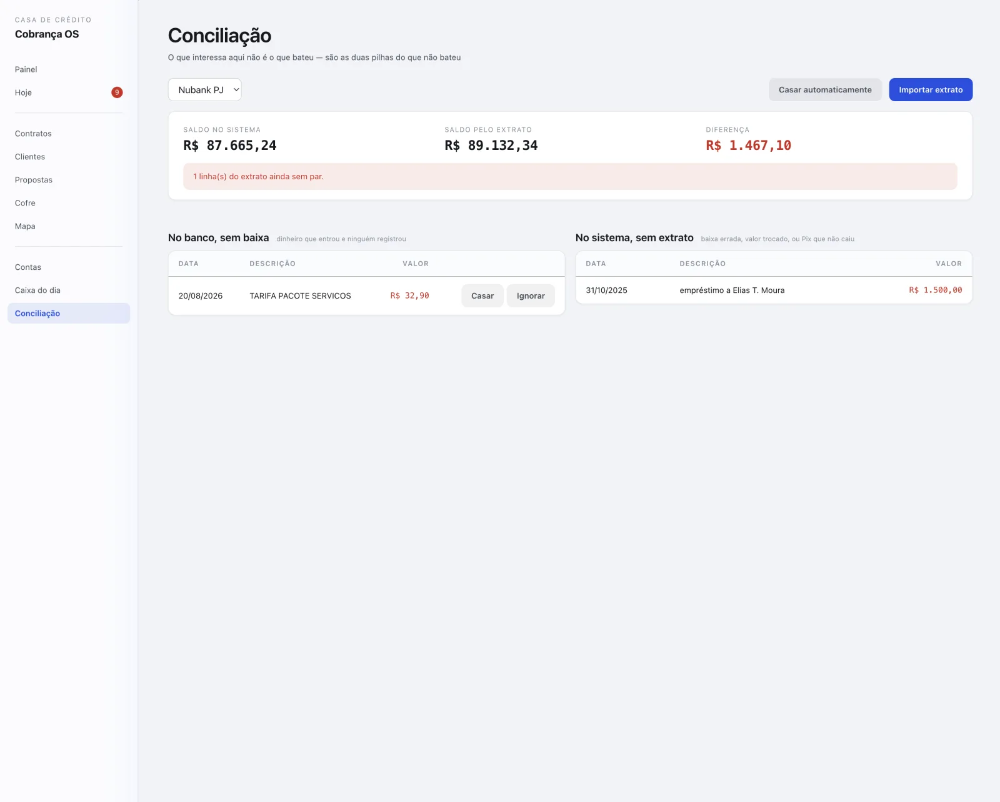

COBRANÇA OS
Quanto está na rua, quanto apodreceu e se a garantia cobre

O resultado
O dono abre uma tela e lê a carteira em um número: quanto está na rua, quanto disso passou de noventa dias e se o que está no cofre cobre o que falta receber.
De manhã, a fila do dia já diz quem cobrar primeiro: promessa quebrada, atraso novo, atraso antigo. Ninguém decide isso olhando planilha.
O problema
Casa de crédito pequena controla carteira em planilha, e a planilha mente em três lugares ao mesmo tempo. O pior deles é o quanto o cliente já pagou: dez mil pagos podem ter abatido oitocentos da dívida, porque o resto foi multa, mora e juros.
Cobertura calculada pelo valor de avaliação também é ilusão. Avaliação é preço de vitrine, e garantia só é acionada quando não há tempo de vitrine.
O que o sistema faz
- Três modalidades de contrato: parcela fixa, só juros e juros simples divididos.
- Baixa de pagamento que reparte o valor parcela a parcela e mostra para onde foi cada real.
- Cofre com avaliação dupla, fotos e conferência física dos bens.
- Fila do dia com promessas, atrasos e pontuação de cada cliente.
- Propostas com simulação e texto pronto para enviar no WhatsApp.
- Conciliação de extrato bancário em duas pilhas: no banco sem baixa, no sistema sem extrato.
- Caixa do dia em que contar é conferir, nunca corrigir: a diferença fica registrada.
- Mapa da carteira por bairro, com montante e inadimplência.
Telas




Feito para durar
- 219
- testes automáticos em 29 arquivos, um por módulo
- 27
- tabelas, nenhuma com saldo gravado: saldo é sempre calculado
- 0
- dependências externas
Nada que envolve dinheiro é sobrescrito
Saldo, situação de parcela e saldo de conta são calculados a partir de um registro que só cresce. Correção é lançamento novo, nunca edição do antigo.
Cliente novo não é cliente ruim
Quem não tem histórico fica com pontuação neutra. Zero significaria que quebrou todas as promessas, que é o oposto de não sabermos nada.
Cópia de segurança cifrada, todo dia
O banco guarda CPF, dívida e bens de terceiros. Por isso a cópia é feita todo dia, conferida, cifrada com AES-256 e mantida por trinta dias.
Stack
Python 3 só com a biblioteca padrão, SQLite, HTML, CSS e JavaScript sem framework. Cópia de segurança cifrada com AES-256.